On-the-fly irreps generation from solvable group chain#
This page describes an algorithm to generate irreps for solvable groups [Net73].
Subduced and induced representations for solvable group#
Let \(H\) be invariant subgroup of \(G\) such that \(G/H = \mathbb{Z}_{p}\) (\(p\) is prime and \(r^{p}=e\)),
Consider projective irrep \(\Delta\) with factor system \(\mu\) for \(H\),
They are mutually inequivalent: \(\Delta \uparrow G \downarrow H \cong \sum_{m=0}^{p-1} \Delta^{(m)}\)
They are all equivalent: \(\Delta \uparrow G \downarrow H \cong p \Delta\)
Case-1: conjugated irreps are mutually inequivalent#
For case-1, the induced representation \(\Delta \uparrow G\) is irrep [1] [2]:
Case-2: conjugated irreps are equivalent#
For case-2, the induced representation \(\Delta \uparrow G\) is reducible. Let one of intertwiner between \(\Delta^{(0)}\) and \(\Delta^{(1)}\) be \(\mathbf{U}\),
The induced representation \(\Delta \uparrow G\) is decomposed to \(p\) irreps \(\{ \Delta_{q} \}_{q=0}^{p-1}\),
The coefficient \(\omega_{q} \, (q = 0, \cdots, p - 1)\) is determined as follows:
Decomposition of crystallographic point groups#
A crystallographic point group \(G\) can always be decomposed as Eq. (1) because it is a solvable group. spgrep adapts the following decomposition [Aro16]:

References#
M. I. Aroyo, editor. International Tables for Crystallography. Volume A. International Union of Crystallography, December 2016. URL: https://doi.org/10.1107/97809553602060000114, doi:10.1107/97809553602060000114.
N. Neto. Irreducible representations of space groups. Acta Cryst. A, 29(4):464–472, Jul 1973. URL: https://doi.org/10.1107/S0567739473001129, doi:10.1107/S0567739473001129.